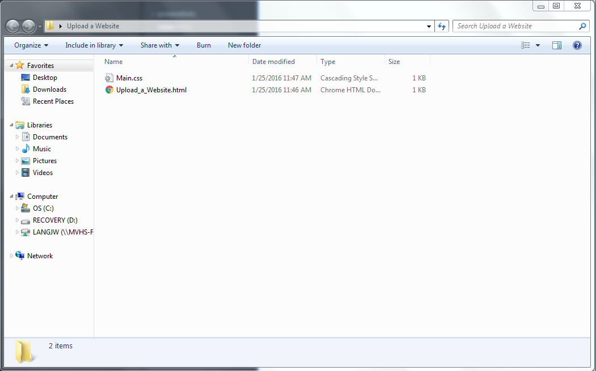
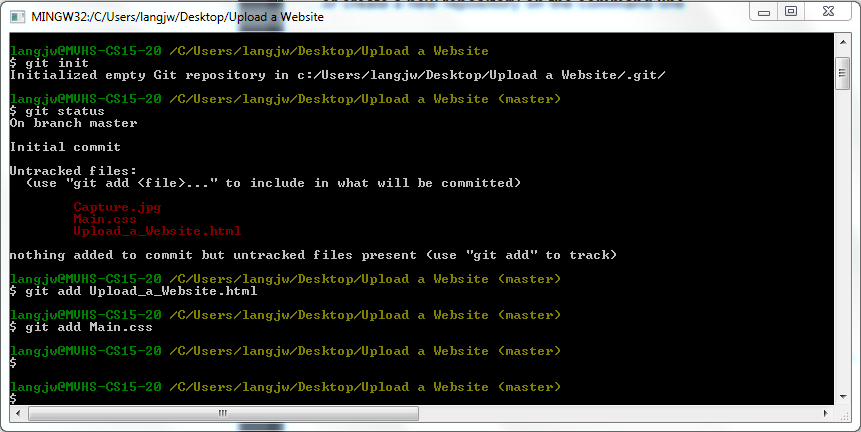
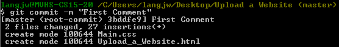
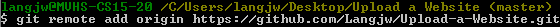

Save all your work and put it in one folder.
Open the folder and right click. This will pull up a small window, select GitBash from that window.
In GitBash you have to add the items usin "Git Init," "Git Status," and "Git Add."
Then you need to commit the command using "Git Commit." By doing this you are basically saving your changes to the documents.
Next, you need to create a link to your website using the command in the image below.
